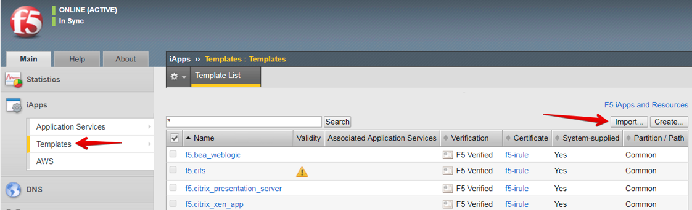
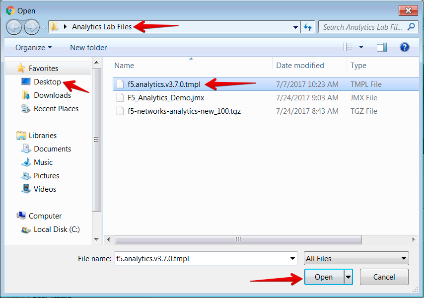
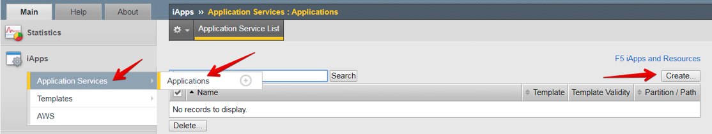
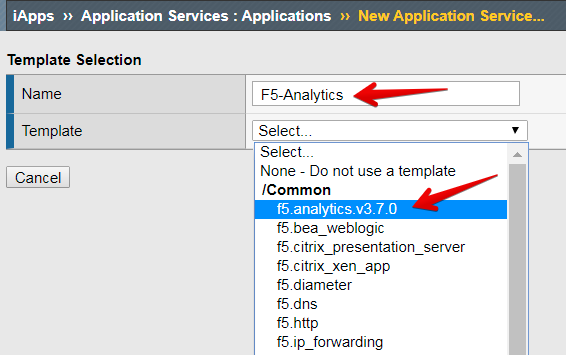
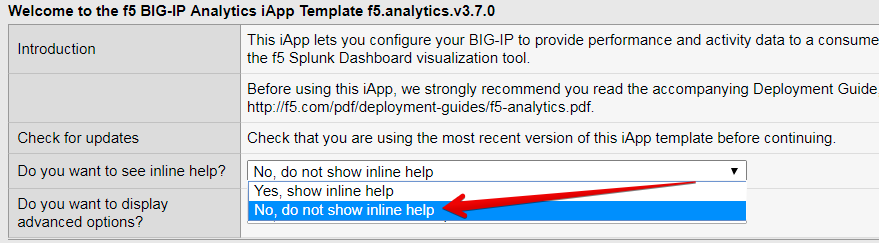
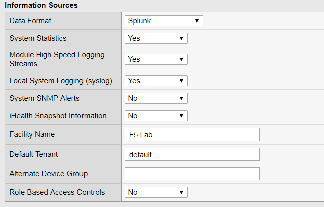
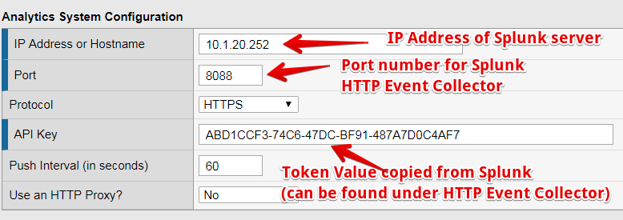
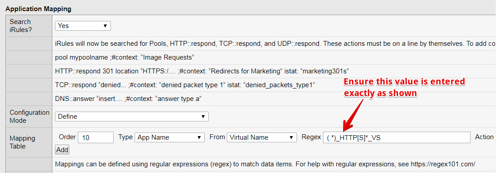

3.2.1. Task 2: Import and configure the F5 Analytics iApp template on the BIG-IP¶
Open a new tab in your Chrome browser, and click on the bookmark for BIGIP_A to connect to the BIG-IP GUI
Login using the following credentials:
- Username:
admin - Password:
Agility2018
- Username:
Go to iApps >> Templates
Click Import in the top-right

Click Choose File
Navigate to Desktop > Analytics Lab Files, and select the f5.analytics.v3.7.0.tmpl file. Click Open

Click Upload
Once the file is finished uploading, you should see it listed in the iApp Templates table.
Go to iApps >> Application Services >> Applications
Click Create in the top-right

For the Name, enter
F5-AnalyticsFrom the Template pull-down menu, choose f5.analytics.v3.7.0

In the template configuration, in the Welcome to the f5 BIG-IP Analytics iApp Template section, change the response for the Do you want to see inline help? Question to No, do not show inline help.

Note
If you are not familiar with what all the different settings refer to, you may want to keep the inline help enabled. For now, we have disabled it just to reduce the amount of additional text on the configuration screen.
Under the Information Sources section, set the following:
- Data Format: Splunk
- System Statistic: Yes
- Module High Speed Logging Streams: Yes
- Local System Logging (syslog): Yes
- System SNMP Alerts: No
- iHealth Snapshot Information: No
- Facility Name:
F5 Lab - Default Tenant:
default - Role Based Access Controls: No

Under the Analytics System Configuration, enter the following:
- IP Address or Hostname:
10.1.20.252 - Port:
8088 - Protocol: HTTPS
- API Key: <paste the Token Value that you copied from Splunk in the previous task>
Leave other settings at their default values

- IP Address or Hostname:
Leave all settings under Module Log Stream Capture and Local Logging Capture sections at their default values
Under Application Mapping, leave all settings at their default values, except in the Mapping Table, enter the following:
- Order:
10 - Type: App Name
- From: Virtual Name
- Regex:
(.*)_HTTP[S]*_VS - Action: Map
- AppendPrefix: <leave blank>
- DirectMapping: <leave blank>

- Order:
Click Finished
Note
It may take up to 10 minutes for the system to start showing data in Splunk.